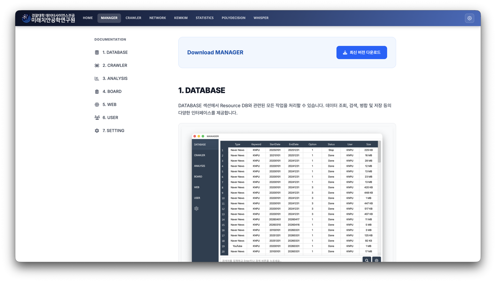
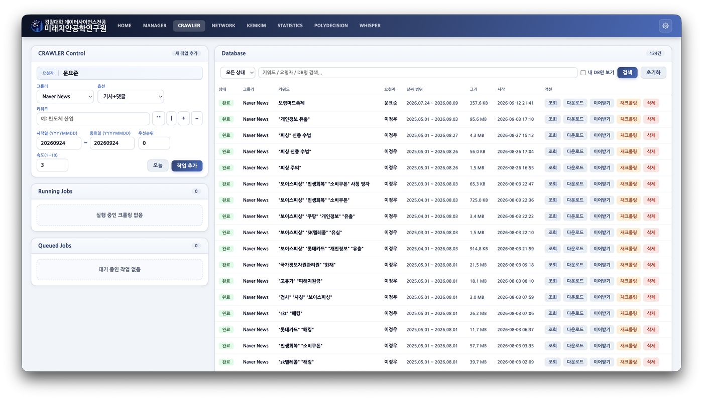
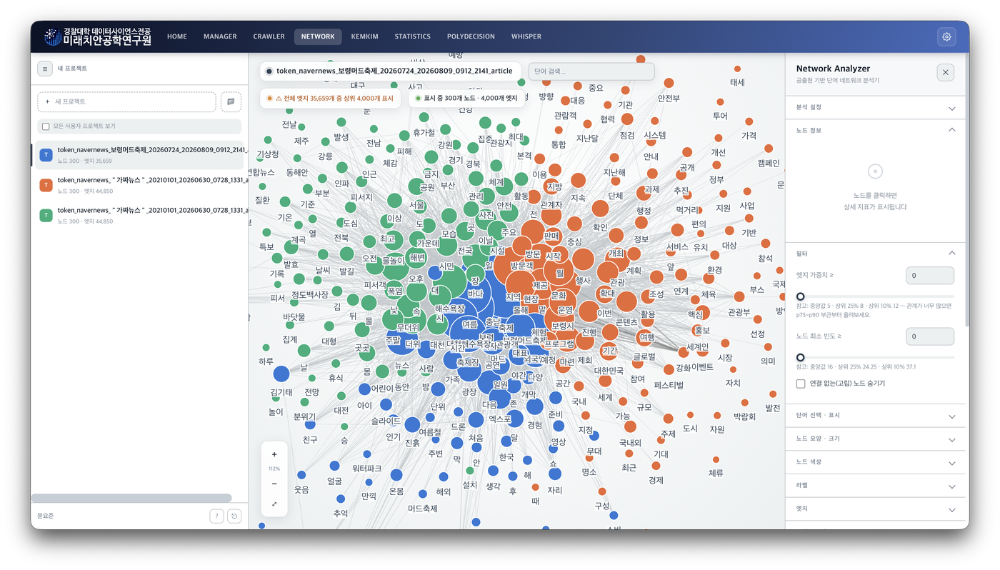
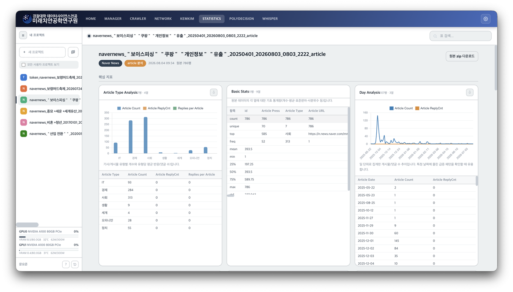
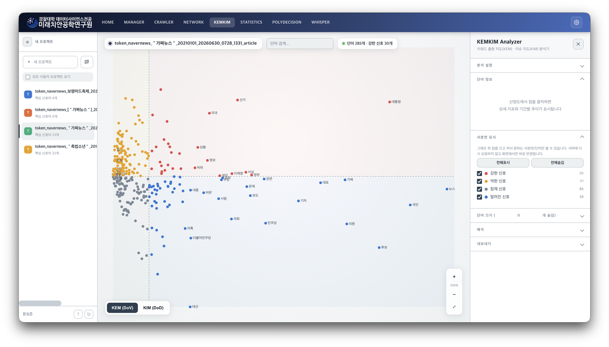
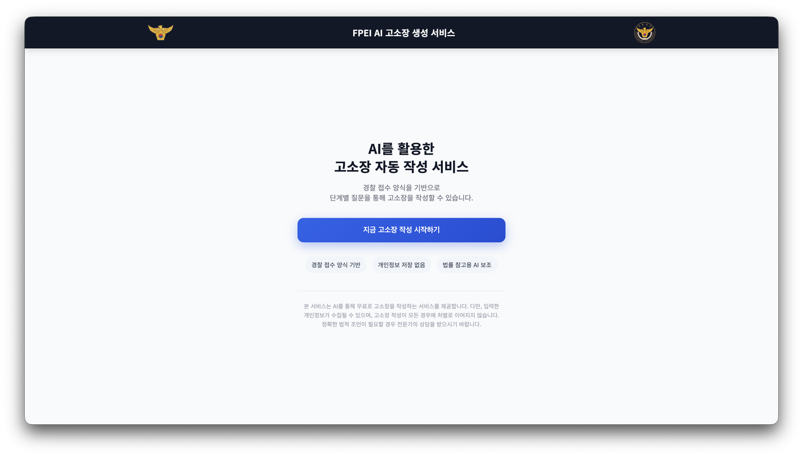
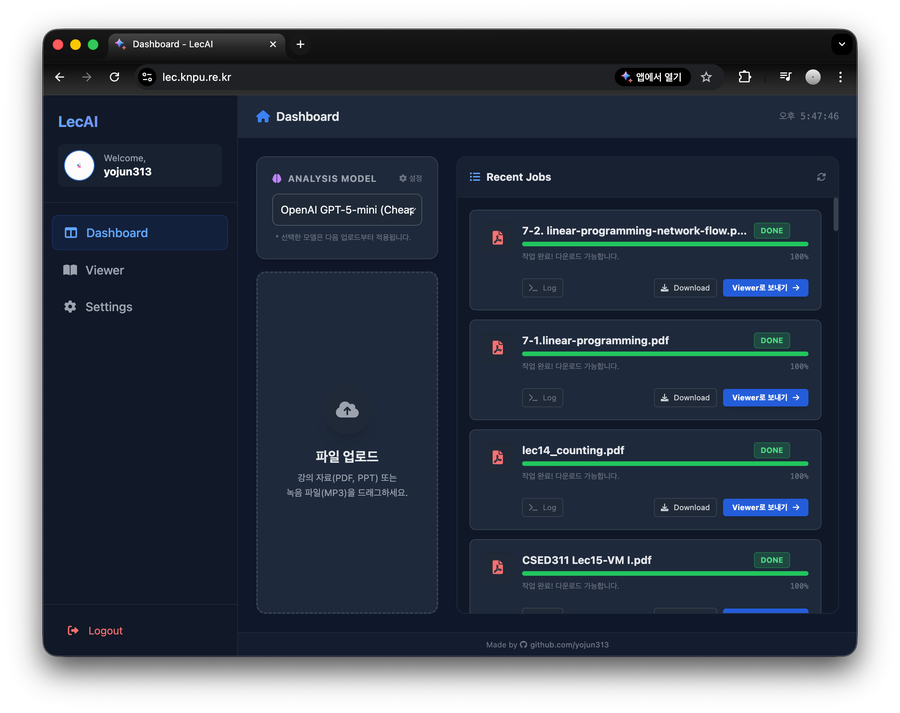

효율적인 연구 환경을 위한 핵심 서비스 대시보드입니다.

연구 리소스 관리, 빅데이터 분석을 지원하는 통합 플랫폼입니다.

대규모 데이터 수집을 통해 데이터셋을 구축합니다.

자연어 속 소셜 네트워크를 분석, 시각화합니다.

빅데이터를 통계 분석, 시각화합니다.

미래신호 예측(KEMKIM)을 통해 시각화합니다.
연구실 내부 GPU 자원을 활용한 대규모 언어 모델을 제공합니다.

LLM을 활용한 법률적 요건에 맞는 고소장 초안 생성을 돕는 서비스입니다.

강의 자료를 AI로 분석하고 학습 효율을 극대화하는 서비스입니다.